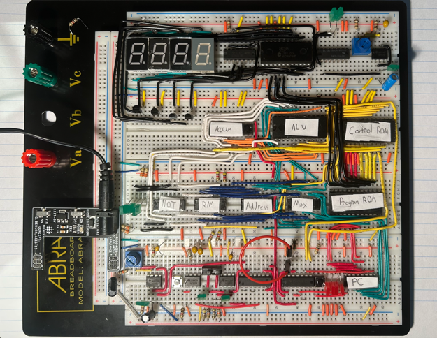
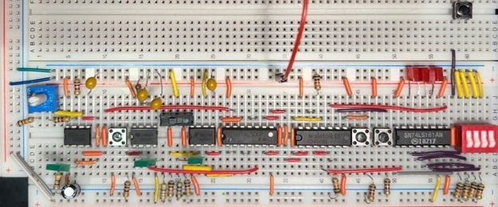
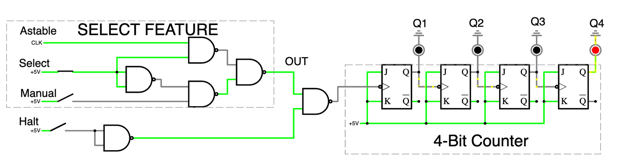
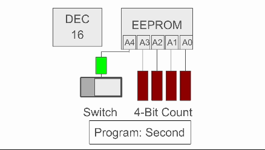
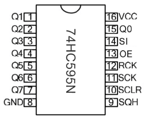
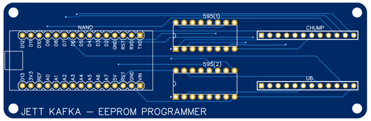
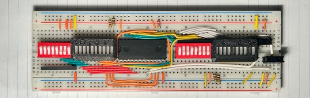
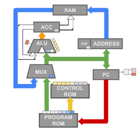
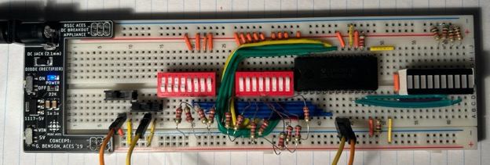
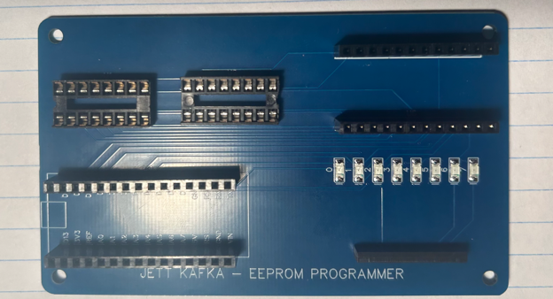

2025 · Computer Architecture · Digital Logic
CHUMP Computer
A multi-stage build of a breadboard-based 4-bit computer using clock and counter logic, EEPROM program storage, control ROM, an arithmetic logic unit, RAM, registers, and a final integrated hardware system.

Master Project
Five build milestones
CHUMP is best understood as one large computer architecture project rather than a collection of isolated assignments. Each stage added a required subsystem: timing, program memory, arithmetic hardware, system-level data flow, and final integration.
CHUMP is split up into 5 parts:
-
Part 1: Clock & Counter
Timing signals, manual stepping, and program count control. -
Part 2: Program EEPROM
Stored programs and EEPROM programming hardware. -
Part 3: ALU
Arithmetic and logical operations using the 74LS181. -
Part 4: Architecture Integration
Program ROM, control ROM, RAM, MUX, accumulator, and address logic. -
Part 5: Final Build
Full CHUMP wiring, demonstration programs, and user display.
Project Video
Project Demonstrations
Note: The video below is the final video for the project, however each part has its own video within its section.
 ▶ Watch on YouTube
▶ Watch on YouTube
Final Build: Complete CHUMP demonstration
Demonstrates the integrated computer and its final project features.
Engineering Challenge
Build a computer from visible hardware.
The project breaks a computer into physical subsystems that can be wired, tested, and debugged individually: clock generation, program counting, instruction storage, control decoding, arithmetic/logic operations, RAM access, and data movement.
Unlike software-only computer architecture exercises, this build exposes timing, enable pins, address lines, data buses, and control signals directly on the breadboard. The result is a computer that can run short programs while making the underlying hardware behavior visible.
What made CHUMP difficult
- Multiple IC families and subsystems had to behave correctly at the same time.
- EEPROM address pins, output enable, and write enable behavior had to be controlled precisely.
- The final machine required clean wiring and staged debugging because a single floating input or bad gate could break the system.
- The final build added an extra user display that used persistence of vision and synchronized timing logic.
Clock & Counter
The first stage created the timing and program-count foundation for the computer. The system could advance automatically with an astable clock, advance manually with a debounced button, or be halted/overridden for debugging.
The clock/counter stage used three 555 timers: one for the astable clock, one to debounce a pushbutton, and one to stabilize the select switch. NAND gate logic selected between the automatic and manual clock paths, while a halt feature allowed the output to freeze. The resulting clock output drove a 74LS161 4-bit counter, giving the project a controllable program counter from 0 to 15.



Program EEPROM & Programmer
The second stage added stored program behavior. The AT28C16 EEPROM allowed the 4-bit program counter output to select bytes of stored instruction data, turning the hardware from a counter into the beginning of a programmable system.
The EEPROM stores bytes that can be read from a selected address. In the CHUMP build, the 4-bit counter connects to the lower address pins so the computer can step through a 16-line program. A switch can select between stored program regions, allowing different CHUMP programs to be demonstrated without rebuilding the circuit.
The EEPROM programmer was built separately using an Arduino Nano and 74HC595 shift registers. Because the Nano does not have enough pins to directly drive the full EEPROM address/data interface, the programmer shifts address bits through the 595 chips, then pulses write enable to store each byte. The programmer code included functions for setting addresses, reading bytes, writing bytes, erasing memory, and printing EEPROM contents in 16-byte rows.



The hardest bug in this stage came from EEPROM address pins floating when they were off. The outputs would temporarily read HIGH after power-up and then become inconsistent. Grounding the inactive address pins fixed the issue and made the EEPROM behavior stable.
✓ Part 2 Video
Arithmetic Logic Unit
The third stage focused on the ALU, the subsystem responsible for manipulating data. The 74LS181 performs arithmetic and logic operations on two 4-bit inputs and produces a 4-bit output.
The ALU tester used switch banks to manually set the A input, B input, select lines, carry-in, and mode control. The select lines choose one of sixteen possible functions, while the mode control pin switches between logic operations and arithmetic operations. With carry-in enabled for arithmetic mode, the chip can access additional variations of the arithmetic functions.
This stage made the computer’s data-processing core tangible. Instead of seeing arithmetic as a software abstraction, the project showed how select lines and control inputs physically determine the output of a logic/arithmetic chip.


The physical layout also required careful labeling and visual organization. Morland bar graphs and 3D-designed covers were used to make the inputs and outputs readable during testing.
✓ Part 3 Video
Architecture Integration
The final CHUMP architecture combined the program counter, program ROM, control ROM, multiplexer, ALU, accumulator, RAM, and address register into one data-flow system.
The program counter selects the current line of the program. Its 4-bit output drives the program ROM, which returns an 8-bit instruction. The instruction is divided into two nibbles: the high nibble acts as the opcode, and the low nibble acts as the constant value. The opcode selects a control-ROM address, and the control ROM outputs the enable/load/reset signals that determine what the computer does during that instruction.
The multiplexer decides whether the ALU receives a constant from the program ROM or a value retrieved from memory. The accumulator stores the ALU output so that a result can be held across instructions, written to RAM, or fed back into the ALU for multi-step operations. RAM is used for storage, while the address register makes memory-based instructions possible by preserving which RAM address should be accessed.
Instruction examples
CHUMP can execute instructions such as LOAD, READ, ADD/SUBTRACT, STORETO, and GOTO. For example, GOTO loads a new value into the program counter so the 16-line loop can jump back to the beginning or skip an initial setup section. Memory instructions require a READ step first, allowing a RAM address to be stored before an IT-style operation retrieves the value from that address.
Final Build & User Display
The completed CHUMP used the bottom three breadboards for the computer itself, with a user-aiding display on the top breadboard to make the active instruction easier to read.
The final computer could run 16-line CHUMP programs that read, manipulate, and write data to RAM. Example programs included a counter-style loop, a program to swap two RAM addresses, and a loop that alternated a preprogrammed 4-bit output. The control ROM only needed to be programmed once; changing program behavior mainly required changing the program ROM.

The user display was an additional hardware logic feature. It used one EEPROM and persistence of vision to display the first four letters of an instruction across four seven-segment displays. A ring counter selected which digit was active, while a small program counter selected which EEPROM byte should appear. The opcode shifted into the EEPROM address range selected the instruction word to display.
This display was intentionally more efficient than using four separate EEPROMs, but it introduced a difficult synchronization problem. If timing drifted, the letters could shift and show an incorrect sequence, such as “EADR” instead of “READ.” Even with that limitation, it demonstrated a hardware-based display system built from earlier digital logic concepts.

Key Takeaways
What this project demonstrates
CHUMP shows a full progression from smaller digital subsystems to an integrated computer architecture project.
- Designed and debugged timing, memory, arithmetic, and control subsystems.
- Worked with 555 timers, NAND logic, 74LS161 counters, AT28C16 EEPROMs, 74HC595 shift registers, 74LS181 ALU hardware, RAM, registers, and seven-segment display logic.
- Built an EEPROM programmer using Arduino Nano control and shift-register address expansion.
- Integrated program ROM, control ROM, ALU, accumulator, RAM, and address logic into a working computer structure.
- Documented and demonstrated the project through multiple videos, custom diagrams, and staged testing.